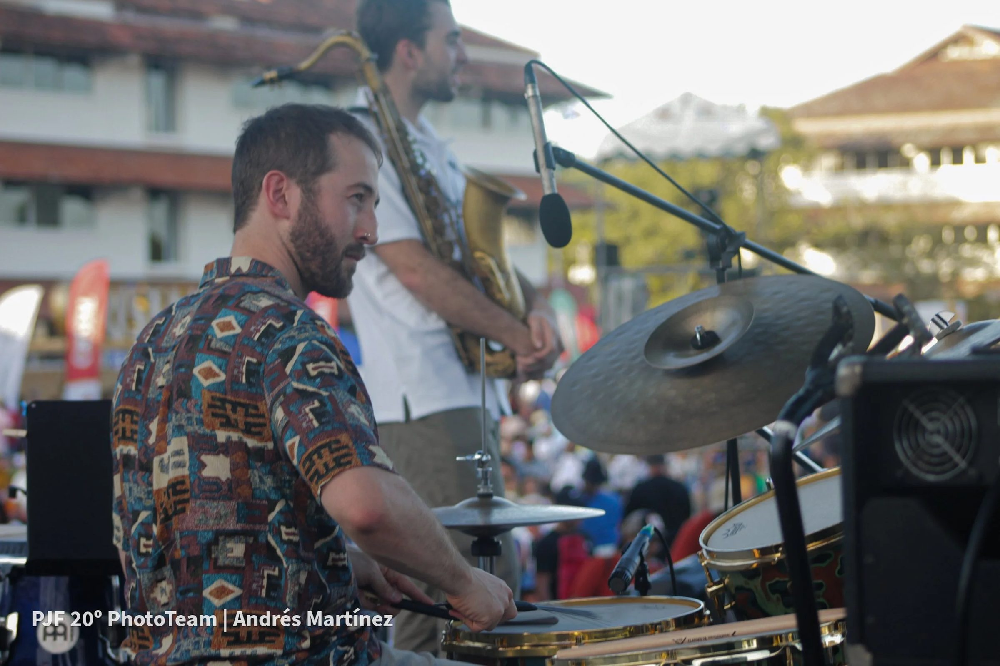
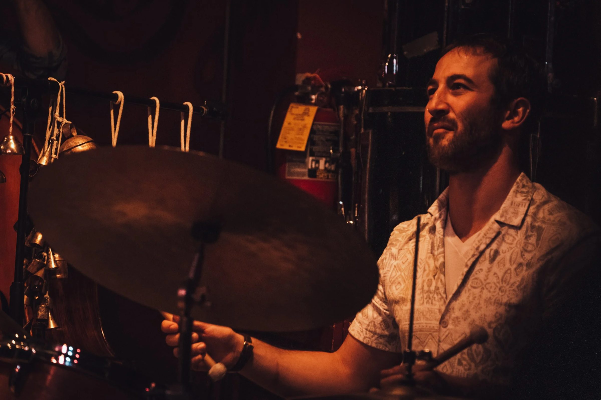

Bombaras
Una haflah en vivo para bailar: acordeón, saxofón, guitarra, bajo y percusión. Pensada para bares, clubes, festivales y celebraciones.
Contratar a Bombaras
Panama Jazz Festival · foto Andrés Martínez
Nadav puede llevar a tu escenario sus bandas, las formaciones en las que toca y las producciones que crea. Cuéntale cómo es tu sala, la fecha y el público, y te propondrá la opción más adecuada.
Una haflah en vivo para bailar: acordeón, saxofón, guitarra, bajo y percusión. Pensada para bares, clubes, festivales y celebraciones.
Contratar a BombarasLa agrupación del intérprete de tar y compositor Itai Armon, con raíces en la música clásica de Irán y de Medio Oriente. Para salas íntimas, auditorios y festivales.
Consultar sobre la agrupaciónVeladas que Nadav compuso y dirigió: músicos judíos y palestinos en diálogo, o tres percusionistas al frente de una banda completa. Listas para viajar más allá de Jerusalén.
Programar una producciónUn concierto creado en torno a la temática de tu festival, a tu sala o a una tradición que quieras destacar. Nadav compone, elige a los músicos y dirige la velada.
HablemosTambores de marco, darbuka y riq para conciertos y grabaciones, como hace Nadav con Shimon Buskila, Rotem Cohen y otros artistas.
Contratar a NadavÚnete para enterarte antes que nadie de los próximos conciertos y las nuevas producciones de Nadav, junto con sus recomendaciones personales de conciertos boutique de músicas del mundo en Israel. Pocos mensajes al mes, solo anuncios.